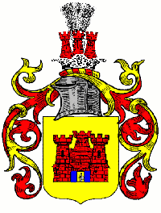

Coat of Arms
von Zelberschwecht - Laszewski
the original being Zelberschwecht Grzymala



 1
1
Preussicher Adel
origin: https://web.archive.org/web/20060430150519/http://zelberschwecht.com/history.html
von Zelberschwecht - Laszewski see certificate by the German Emperor Wilhelm II 1887 v. Selberswech Laszewski, Marienburg, Poland, meeting hall of the Teutonic Knights. Laszewski de Silberschwecht
- Reference: General Illustrated Armorial by Victor & Henry Rolland, publ J>B> Rietstap Sauveguarde Historique, 142 Rue Crequi, 142 Lyon, France
Newer edditions may be, but I am not sure which volume it is:
For additional reference see also: http://home.foni.net/~adelsforschung/zurek05.htm best to have it translated into your language via Google or other. > AD 1400
also found references under Zylberschweg / Zelberszwecht / Zylberswech
The Legend
The legend of origin of the Grzymala clan who took over the same crest goes:
Some authorities believe that this coat of arms was brought to Poland from Germany by a knight named Zylberschweg or Zelberszwecht. It is, however, one of the oldest Polish coats of arms, whose clan’s war cry was Grzymal/a (for Thunder). The original homeland of this clan was the district of L/omz’a in Masovia. The coat of arms was later augmented by a man in full battle armor standing in the gate, whose left arm held a shield, whose right arm held a raised sword. This augmentation was received by Przecl/aw Grzymal/a, for his courageous defense of the city Pl/ock in 1078 against the Jatwings from Prince Wl/adisl/aw Hermann.
Subsequently the coat of arms was also abated: Prince Boleslaw Wstydliwy of Poland (1127-1179), exiled the knight Grzymal/a, owner of Gos’lice in the Palatinate of Pl/ock, on the suspicion of treacherous dealings with Prince Kazimierz of Kujaw, and as further evidence of the Prince’s displeasure closed the gate in this knight’s coat of arms.
A second (though positive) abatement also occurred: When the Lithuanians along with the Jatwings attacked Masovia, a Grzymal/a, owner of Zielony and Slasy, courageously stood against them, inflicted a defeat upon them and hunted them down. For which feat of arms, the coat of arms was abated around the knight and the gate, leaving only a wall with towers, where there formerly was also a rampart.
Laszewski is a direct connection to v. Silberschwecht Concordance of polonisierter German aristocracy names in west Prussia starting from 1400
German surname before the polish takeover v. Silberschwecht Polish name after 1500 Laszewski see the the defeat of the Teutonic knights at Grunwald/Tannenberg (1410): The number of the Teutonic Knights never exceeded a thousand, but the whole country was organized in a military manner, and with the constant arrival of new crusaders the order was able to hold its own among its neighbors, especially the inhabitants of Lithuania, who were of the same race as the natives of Prussia and, like them, pagans. In the battle of Rudau (1307) the Lithuanians were driven back, and they were converted only some years later, with their grand duke, Jagellon, who embraced Christianity when he married the heiress of the Kingdom of Poland (1386). With this event, which put an end to paganism in that section of Europe, the Teutonic Knights lost their raison d’être. Thenceforth their history consists of incessant conflicts with the kings of Poland. Jagellon inflicted on them the defeat of Tannenberg (1410), which cost them 600 knights and ruined their finances, in order to repair which the order was obliged to have recourse to exactions, which aroused the native nobility and the towns and provided the Poles with an opportunity to interfere against the order. A fresh war cost the order half its territory and the remaining half was only held under the suzerainty of the King of Poland (Treaty of Thorn, 1466).
This means v. Zelberschwecht or v. Silberchwecht and Laszcwski are the same.
Laszewski comes from from the Estate LASZEWO, ski means from, so LASZEWSKI means from Laszewo. ski is the polish nobel version of the German v. or von before the family name. (Pictures and map soon to come) also Lascewski, Laczewski.
This means anyone with the name Laszewski is a direct descendant from the knight Silberschwecht, with the various dialect different pronunciation came up thus also the von Zelberschwecht.
Before 1400 it was v. Silberschwecht now von and I will need to learn the difference between the 2 versions.
There is a direct relationship between Grzymala since that was the battle cry of the Selberschwecht knight and his clan was “Grzymala” the direct translation of Grzymala is Thunder in English.
Post 2
origin: https://web.archive.org/web/20200220174601/http://zelberschwecht.com/index.html
Zelberschwecht - Grzymala
origin Johann Zelberschweckt Grzymala A.D. 1272
Grzymala / von Zelberschwecht - Laszewski / von Laszewski / von Zylberswech / more listed below
THe following names have a relationship to the Laszewski’s
von Zelberschwecht - Laszewski, v. Selberswech Laszewski, von Zylberswech -Laszewski, Laszewski de Silberschwecht, Zylberschweg / Zelberszwecht / Zylberswech, v. Silberschwecht, Lascewski, Laczewski, Selberschwecht, Silberschwech
Baranowski, BartoId, Bieganowski, Biestrzykowski, Bieszczycki, Baczewski, Blazejewski, Borkowski, Borkacki, Bortkiewicz, Borzewicki, Bossowski, Brodowski, Broglowski, Brzozoglowski, Buckiewicz, Buczow, Budgin, Budziszewski, Burkard, Bukowski, Businski, Buszynski, Bzowski, Chodziewski, Chrostowski, Chwalikowski, Chwalkowski, Ciunowicz, Cydzik, Czaplicki, Czapski, Czampski, Czusze(o)wski, DlugoIecki, Dlugoski, Dluski, Dobiecki, Dobrodziejski, Domarat, Domaszewski, Domeyko, Dominikowski, Dzianotti, Dziatkowski, Dzierzanowski, Frankenberg, Freyberg, Garwaski, Gasinski, Gassowski, Gilewicz, Glogowski, Goslicki, Gozdowicz, Górski, Grabowiecki, Grabowski, Grudzinski, Grzymala, Gruszkowski, Grzymkowski, Grzymultowski, Halaczkiewicz, Hawranowski, Hertyk, Hoffman, Iwinski, Jablonowski, Jazwinski, Jurkowicz, Jurkowski, Kaliborski, Kamienski, Kaminski, Kamodzinski, Kalinski, Kaliski, Kamoczynski, Kazanowski, Kazlowski, Kijenski, Kikowski, Klonowski, Kobylanski, Kobylenski, Koclowski, Koskowski, Krasnopolski, Kretkowski, Krzemienowski, Laugmin, Lecinski, Lesniowski, Litwinski, Litwosz, Litynski, Lubanski, Lubiatowski, Ludzicki, Lagiewnicki, Lagicwski, Laguna, Laszewski, Lazanowski, Lacki, Lazninski, Losowski, Ludzicki, Machwicz, Malachowski, Margonski, Makolski, Meisinger, Mileski, Mniszewski, Modrzynski, Morze, Moszczynski, Moscibrodzki, Murawski, Niecikowski, Niegolewski, Niemira, Ochenkowski, Odachowski, Oleski, Olesnicki, Olszanowski, Opalacz, Ostrowski, Parzniczewski, Pachowski, Peczkowski, Peczlicki, Piatkowski, Piczkowski, Pierzchnowski, Podlecki, Podolski, Pogorzelski, Pogorell, Pokrzywnicki, Potulicki, Pradzy(e)nski, Pradzewski, Przeciszewski, Przejrzenski, Przyborowicz, Przyborowski, Przybyszewski, Przyluski, Rachf(w)alowski, Raclawicki, Radowicki, Radziszewski, Raszowski, Remer, Rybczynski, Rybski, Rychlicki, Rychlinski, Rymwid, Ryn(m)widowicz, Siedlecki, Siemianowski, Skoczynski, Skotnicki, Skwiroszewski, Slomowski, Smerzynski, Sinogulecki, Sobolinski, Sojecki, Starzynski, Strçkowski, Starogrodzki, Strzelecki, Strzelski, Suchywilk, Szczaworzyski, Szmerzynski, SIaski, Slezynski, .Sliwowski, Swidrygiell, Swiechowski, Swierad, Swiszowski, Targonski, Troszczewski, Truszczynski, Turczynski, Turza(e)nski, Ujejski, Ulinski, Wabiszewici, Werecki, WieIgórski, Wielogórski, Wieszczycki, Wiewiórkowski, Wilamowski, WiIkowski, Wierzbicki, Wiszniowski, Wkrynski, Wolski, Woyz(dz)bun, Wskrzenski, Wydrzynski, Wysocki, Wziachowski, Zaborowski, Zaleski, Zamojski, Zasadzki, Zasiecki, Zbierzchowski, Zbigniewski, Zbi(y)kalski, Zbikowski, Zderkiewicz, ZieIenski, Zielinski (Gelinski, Gelinsky, Geliski, Zelinski, Zelinsky, Zeliski, Zelisky, Zielinsky, Zilinski, Zilinsky e Zilisky), Znatowicz, Zwierzchowski, Zwierzynski, Zarnowiecki, Zut.
Post 3
Origin: https://web.archive.org/web/20200220154802/http://zelberschwecht.com/zelberref.html
reference to von Zelberschwecht - Laczewski on the Internet
http://pom-wpru.kerntopf.com/literatur/n_heidn1.htm Namenverzeichnis der Publikation “Ortschaften des Kreises Karthaus von Willy Heidn” > … v.Laszewski (Zelberschwecht v.Laszewski), 28, 49, 50, 111, 154, 294, 364, 368, 404, 458, 459, 526, 556, 557, 599, 600, 606, 609, 611, 673, 681. …
http://www.geocities.com/protasyev_ugol/Dubovitsky.html … is : “Those who use armed knight in the gate … come from Zelberszwecht (??Zelberschwecht??), . he comes from first families, or he come with his coat of …
http://home.foni.net/~adelsforschung/adels09.htm Familienkunde des deutschen Adels vom 16. bis 20.Jahrhundert > Zelberschwecht-Laszewski
http://home.foni.net/~adelsforschung/orden04.htm Adelige Inhaber in- und ausländischer Orden 1908 > Zelberschwecht-Laszewski
v.Silberschwecht
http://home.foni.net/~adelsforschung/zurek05.htm Zur Polonisierung des westpreußischen Adels > deutscher Adelsnamen in Westpreußen ab 1400 > v.Silberschwecht » Laszewski
Zylberschweg
http://groups.yahoo.com/group/jablonowski/message/19 Some authorities believe that this coat of arms was brought to Poland from Germany by a knight named Zylberschweg or Zelberszwecht. It is, however, oneof the oldest Polish coats of arms, whose clan’s war cry was Grzymal/a.
http://home.foni.net/~adelsforschung/zurekwap01.htm Die Wappen des polnischen Adels > Grzymala. > Einige wollen dieses Wappen durch einen Ritter Zylberschweg oder Zelberszwecht aus Deutschland nach Polen eingeführt wissen, allein es ist eins der ältesten polnischen Wappen, dessen Zuruf Grzymala war. Die Heimat dieses Geschlechts war ursprünglich in Masowien, im Lande Lomza. > Laszewski
other references:
Laszewski de Silberschwecht -reference: general Illustrated Armorial by Victor & Henry Rolland, publ J>B> Rietstap Sauveguarde Historique, 142 Rue Crequi, 142 Lyon, France. At the New York Public Library Fifth Avenue and 42nd Street.
v. Selberswech Laszewski, Marienburg, Poland, meeting hall of the Teutonic Knights.
Post 4
Results from the 1st research at the NEW York Public Library, more soon.
 {width="644”
height="326”}
{width="644”
height="326”}
direct reference to the Knight Silberschwecht (Zelberschwecht)
there must be a relationship between the Laszez de
Touczamp.http://armorial.free.fr/magny/listel.html
Boistard de prémagny Armorial de M. MAGNY (France), actually from the
Laszewski side see also Grzymala IV, became french nobility.\
 {width="300” height="215”}
{width="300” height="215”}
 {width="571” height="215”}\
{width="571” height="215”}\
Various coats of arms see the history, i do not understand the one on the right, it must have something to do with the crusaders, maybe the Teutonic Knights.
before and after the influence of the Knight Zelberschwecht.
Question: Is this the original Zelberschwecht?


above finding where at the Public Library in New York (42&5th)
 {width="241” height="300”}
{width="241” height="300”}
trying to find my granduncle Franz (my grandfather's brother whom emigrated to the US) via the emigration archives also at the Public Library on mircofilm
 {width="466” height="300”}
{width="466” height="300”}
 {width="461” height="300”}
{width="461” height="300”}
 {width="467” height="300”}
{width="467” height="300”}
 {width="434” height="300”}
{width="434” height="300”}
Internet research:
http://feefhs.org/de/gi/kq/kq-yz.html
FEEFHS Finding Aid Y and Z to
Die Kartei Quassowski (KQ)
The Original Die Kartei Quassowski was authored by Hans-Wolfgang
Quassowski of Hamburg Germany. It was published and copyrighted 1977 by
Verein für Familienforschung in Ost und Westpreußen
von Zellerschwecht-Laszewski
http://feefhs.org/de/gi/gisw/gisw-l1.html
General Index zu den Siebmacher'schen Wappenbüchern
1605-1957 (GISW)
Laszewski (3)
http://feefhs.org/de/pom/gi/sedina/9095-iq.html
Sedina-Archiv Fammiliengeschichtliche Pommerns
Namenregister (1990-1995)
Laszewski
http://feefhs.org/de/melde/leipzig/leipz-kl.html
Leipzig Melderegister
(City Population Register)
(1890-1949)
(3,706 Microfilm Reels)
Laszewski, von, Karl ... 1813527
Family Grave in Suleczyno (Sullenschin (also called Sullenczyno), Westpreußen, Germany; now Suleczyno (Kartuzy), Gdansk, Poland.) Kasimir von Zelberschwecht Laszewski photos to be posted http://pom-wpru.kerntopf.com/kathkirche/lds/sullenschin.txt
http://www.geocities.com/pchs_54481/archives/townships/earlypolishhist.html They were one of several Slavic tribes populating what is now Poland, each of which had its own language. My mother made a reference to this. see also Cassubian (Kashub) dialekt.
Internet references for: Laszewski (Lasczewski) if you heard that the name means forrest ranger, you are only right in thus your ancestors as far back as the 15th century late back as late the 19th century where in charge of the forrest in the region of Karthaus (both under Poland and Prussia)
http://www.insidepoland.pl/htmls/middle_ages.html
http://www.mediaforce1.com/behopper/Przybyszewski%20%20name.htm
http://www.mediaforce1.com/behopper/Profiles/Przybyszewski,%20Boleslaw.htm
http://www.geocities.com/protasyev_ugol/Dubovitsky.html
Internet reference to the village of Suleczyno (Sullenschin (also called Sullenczyno), Westpreußen, Germany; now Suleczyno (Kartuzy) now 4,451 inhabitants
http://pom-wpru.kerntopf.com/kathkirche/lds/sullenschin.txt Katholic church records on mircofilm > Gefilmt durch the Genealogical Society of Utah, 1954
http://www.gates96.sk/cam/Europe/Poland/index.html?_S.html
guestbook forum for the village: http://www.gates96.sk/cam/Europe/Poland/Suleczyno/cam0.html main page
Evangelist church Sullenschin (evangelische Kirche Sullenschin) http://pom-wpru.kerntopf.com/evkirche/sullenschin.htm
http://www.westpreussen.de/kirchenbuecher/kbkarthaus.htm Kirchenbücher aus dem Landkreis Karthaus (Church books from the district Karthaus) http://www.westpreussen.de/standesamtsregister/stakarthaus.htm Standesamtsregister aus dem Landkreis Karthaus (Register office register from that District Karthaus)
http://premium57.blng.uswest.net/~jamesb/Genealogy/POSEN_L/Jurisdictions/Luth_Dist.html more church records
Stadt und Landkreis Karthaus http://www.ostpreussen-video.de/westprst.htm videos maps
Title Kirchenbuch, 1661-1924 Authors Katholische Kirche Langenau (Kr. Danziger Höhe) (Main Author)
Note Location Film Taufen 1661-1852 Heiraten 1661-1810 FHL INTL Film 527772 Taufen, Tote 1762-1852 FHL INTL Film 527773 Taufen 1838-1839, 1852-1877 Heiraten 1810-1924 Tote 1830-1898 FHL INTL Film 527774 Heiraten 1737-1829 Tote 1737-1894 FHL INTL Film 527775
http://www.familysearch.org/Eng/Search/frameset_search.asp
http://bildindex.de/Orte_1_12_402_1.htm
I believe this to be my grandfather’s brother’s son (my gand ucle) Dr. Franz Edmund von Zelberschewcht Laszewski, since my mother told me that he imigrated to the US and settled in Minnesota.
Francis LASZEWSKI Birth Date: 22 Dec 1904 Death Date: 24 Feb 1988 Social Security Number: 471-36-6732 State or Territory Where Number Was Issued: Minnesota
Death Residence Localities ZIP Code: 55110 Localities: Birchwood, Ramsey, Minnesota Dellwood, Ramsey, Minnesota Gem Lake, Ramsey, Minnesota Lino Lakes, Ramsey, Minnesota Saint Paul, Ramsey, Minnesota Vadnais Heights, Ramsey, Minnesota White Bear Lake, Ramsey, Minnesota White Bear Township, Ramsey, Minnesota
Alfons went to Paris and is now de Laszewski
Post 5
Origin: https://web.archive.org/web/20060905035723/http://www.nxt.cc/zelberschwecht/grzymala.html
GRZYMALA
desendands of the original Zelberschwecht clan or the Grzymala clan that share the same coat of arms: (question: Is Grzymala the clan of the knight Zelberschecht? Are the von Zelberschwecht’s the direct descendant of the knight Zelberschecht)
Baranowski, BartoId, Bieganowski, Biestrzykowski, Bieszczycki, Baczewski, Blazejewski, Borkowski, Borkacki, Bortkiewicz, Borzewicki, Bossowski, Brodowski, Broglowski, Brzozoglowski, Buckiewicz, Buczow, Budgin, Budziszewski, Burkard, Bukowski, Businski, Buszynski, Bzowski, Chodziewski, Chrostowski, Chwalikowski, Chwalkowski, Ciunowicz, Cydzik, Czaplicki, Czapski, Czampski, Czusze(o)wski, DlugoIecki, Dlugoski, Dluski, Dobiecki, Dobrodziejski, Domarat, Domaszewski, Domeyko, Dominikowski, Dzianotti, Dziatkowski, Dzierzanowski, Frankenberg, Freyberg, Garwaski, Gasinski, Gassowski, Gilewicz, Glogowski, Goslicki, Gozdowicz, Górski, Grabowiecki, Grabowski, Grudzinski, Grzymala, Gruszkowski, Grzymkowski, Grzymultowski, Halaczkiewicz, Hawranowski, Hertyk, Hoffman, Iwinski, Jablonowski, Jazwinski, Jurkowicz, Jurkowski, Kaliborski, Kamienski, Kaminski, Kamodzinski, Kalinski, Kaliski, Kamoczynski, Kazanowski, Kazlowski, Kijenski, Kikowski, Klonowski, Kobylanski, Kobylenski, Koclowski, Koskowski, Krasnopolski, Kretkowski, Krzemienowski, Laugmin, Lecinski, Lesniowski, Litwinski, Litwosz, Litynski, Lubanski, Lubiatowski, Ludzicki, Lagiewnicki, Lagicwski, Laguna, Laszewski, Lazanowski, Lacki, Lazninski, Losowski, Ludzicki, Machwicz, Malachowski, Margonski, Makolski, Meisinger, Mileski, Mniszewski, Modrzynski, Morze, Moszczynski, Moscibrodzki, Murawski, Niecikowski, Niegolewski, Niemira, Ochenkowski, Odachowski, Oleski, Olesnicki, Olszanowski, Opalacz, Ostrowski, Parzniczewski, Pachowski, Peczkowski, Peczlicki, Piatkowski, Piczkowski, Pierzchnowski, Podlecki, Podolski, Pogorzelski, Pogorell, Pokrzywnicki, Potulicki, Pradzy(e)nski, Pradzewski, Przeciszewski, Przejrzenski, Przyborowicz, Przyborowski, Przybyszewski, Przyluski, Rachf(w)alowski, Raclawicki, Radowicki, Radziszewski, Raszowski, Remer, Rybczynski, Rybski, Rychlicki, Rychlinski, Rymwid, Ryn(m)widowicz, Siedlecki, Siemianowski, Skoczynski, Skotnicki, Skwiroszewski, Slomowski, Smerzynski, Sinogulecki, Sobolinski, Sojecki, Starzynski, Strçkowski, Starogrodzki, Strzelecki, Strzelski, Suchywilk, Szczaworzyski, Szmerzynski, SIaski, Slezynski, .Sliwowski, Swidrygiell, Swiechowski, Swierad, Swiszowski, Targonski, Troszczewski, Truszczynski, Turczynski, Turza(e)nski, Ujejski, Ulinski, Wabiszewici, Werecki, WieIgórski, Wielogórski, Wieszczycki, Wiewiórkowski, Wilamowski, WiIkowski, Wierzbicki, Wiszniowski, Wkrynski, Wolski, Woyz(dz)bun, Wskrzenski, Wydrzynski, Wysocki, Wziachowski, Zaborowski, Zaleski, Zamojski, Zasadzki, Zasiecki, Zbierzchowski, Zbigniewski, Zbi(y)kalski, Zbikowski, Zderkiewicz, ZieIenski, Zielinski (Gelinski, Gelinsky, Geliski, Zelinski, Zelinsky, Zeliski, Zelisky, Zielinsky, Zilinski, Zilinsky e Zilisky), Znatowicz, Zwierzchowski, Zwierzynski, Zarnowiecki, Zut.
Post 6
Origin: https://web.archive.org/web/20060910055259/http://www.nxt.cc/zelberschwecht/jablonowski.html
Grzymala is a herb(coat of arms) used by the Counts Jablonowski and some non-titled Jablonowski branches. The following history of Grzymala was posted on another group by David Zincavage:
“Some authorities believe that this coat of arms was brought to Poland from Germany by a knight named Zylberschweg or Zelberszwecht. It is, however, oneof the oldest Polish coats of arms, whose clan’s war cry was Grzymal/a. The original homeland of this clan was the district of L/omz’a in Masovia.
The coat of arms was later augmented by in a man in full battle armor standing in the gate, whose left arm held a shield, whose right arm held a raised sword. This augmentation was received by Przecl/aw Grzymal/a, for his courageous defense of the city Pl/ock in 1078 against the Jatwings from Prince Wl/adisl/aw Hermann.
Subsequently the coat of arms was also abated: Prince Boleslaw Wstydliwy of Poland (1127-1179), exiled the knight Grzymal/a, owner of Gos’lice in the Palatinate of Pl/ock, on the suspicion of treacherous dealings with Prince Kazimierz of Kujaw, and as further evidence of the Prince’s displeasure closed the gate in this knight’s coat of arms.
A second (though positive) abatement also occurred: When the Lithuanians along with the Jatwings attacked Masovia, a knight Grzymal/a, owner of Zielony and Slasy, courageously stood against them, inflicted a defeat upon them and hunted them down. For which feats of arms, the coat of arms was abated around the knight and the gate, leaving only a wall with towers, where there formerly was also a rampart.” David Zincavage.
Post 7 References
reference to von Zelberschwecht - Laczewski on the Internet
http://pom-wpru.kerntopf.com/literatur/n_heidn1.htm Namenverzeichnis der Publikation “Ortschaften des Kreises Karthaus von Willy Heidn” > … v.Laszewski (Zelberschwecht v.Laszewski), 28, 49, 50, 111, 154, 294, 364, 368, 404, 458, 459, 526, 556, 557, 599, 600, 606, 609, 611, 673, 681. …
http://www.geocities.com/protasyev_ugol/Dubovitsky.html … is : “Those who use armed knight in the gate … come from Zelberszwecht (??Zelberschwecht??), . he comes from first families, or he come with his coat of …
http://home.foni.net/~adelsforschung/adels09.htm Familienkunde des deutschen Adels vom 16. bis 20.Jahrhundert > Zelberschwecht-Laszewski
http://home.foni.net/~adelsforschung/orden04.htm Adelige Inhaber in- und ausländischer Orden 1908 > Zelberschwecht-Laszewski
v.Silberschwecht
http://home.foni.net/~adelsforschung/zurek05.htm Zur Polonisierung des westpreußischen Adels > deutscher Adelsnamen in Westpreußen ab 1400 > v.Silberschwecht » Laszewski
Zylberschweg
http://groups.yahoo.com/group/jablonowski/message/19 Some authorities believe that this coat of arms was brought to Poland from Germany by a knight named Zylberschweg or Zelberszwecht. It is, however, oneof the oldest Polish coats of arms, whose clan’s war cry was Grzymal/a.
http://home.foni.net/~adelsforschung/zurekwap01.htm Die Wappen des polnischen Adels > Grzymala. > Einige wollen dieses Wappen durch einen Ritter Zylberschweg oder Zelberszwecht aus Deutschland nach Polen eingeführt wissen, allein es ist eins der ältesten polnischen Wappen, dessen Zuruf Grzymala war. Die Heimat dieses Geschlechts war ursprünglich in Masowien, im Lande Lomza. > Laszewski
other references:
Laszewski de Silberschwecht -reference: general Illustrated Armorial by Victor & Henry Rolland, publ J>B> Rietstap Sauveguarde Historique, 142 Rue Crequi, 142 Lyon, France. At the New York Public Library Fifth Avenue and 42nd Street.
v. Selberswech Laszewski, Marienburg, Poland, meeting hall of the Teutonic Knights. photo to be posted.
Family Grave in Suleczyno (Sullenschin (also called Sullenczyno), Westpreußen, Germany; now Suleczyno (Kartuzy), Gdansk, Poland.) Kasimir von Zelberschwecht Laszewski photos to be posted http://pom-wpru.kerntopf.com/kathkirche/lds/sullenschin.txt
http://www.geocities.com/pchs_54481/archives/townships/earlypolishhist.html They were one of several Slavic tribes populating what is now Poland, each of which had its own language. My mother made a reference to this. see also Cassubian (Kashub) dialekt.
Internet references for: Laszewski (Lasczewski) if you heard that the name means forrest ranger, you are only right in thus your ancestors as far back as the 15th century late back as late the 19th century where in charge of the forrest in the region of Karthaus (both under Poland and Prussia)
http://www.insidepoland.pl/htmls/middle_ages.html
http://www.mediaforce1.com/behopper/Przybyszewski%20%20name.htm
http://www.mediaforce1.com/behopper/Profiles/Przybyszewski,%20Boleslaw.htm
http://www.geocities.com/protasyev_ugol/Dubovitsky.html
Internet reference to the village of Suleczyno (Sullenschin (also called Sullenczyno), Westpreußen, Germany; now Suleczyno (Kartuzy) now 4,451 inhabitants
http://pom-wpru.kerntopf.com/kathkirche/lds/sullenschin.txt Katholic church records on mircofilm > Gefilmt durch the Genealogical Society of Utah, 1954
http://www.gates96.sk/cam/Europe/Poland/index.html?_S.html
guestbook forum for the village: http://www.gates96.sk/cam/Europe/Poland/Suleczyno/cam0.html main page
Evangelist church Sullenschin (evangelische Kirche Sullenschin) http://pom-wpru.kerntopf.com/evkirche/sullenschin.htm
http://www.westpreussen.de/kirchenbuecher/kbkarthaus.htm Kirchenbücher aus dem Landkreis Karthaus (Church books from the district Karthaus)
http://www.westpreussen.de/standesamtsregister/stakarthaus.htm Standesamtsregister aus dem Landkreis Karthaus (Register office register from that District Karthaus)
http://premium57.blng.uswest.net/~jamesb/Genealogy/POSEN_L/Jurisdictions/Luth_Dist.html more church records
Stadt und Landkreis Karthaus http://www.ostpreussen-video.de/westprst.htm videos maps
Title Kirchenbuch, 1661-1924 Authors Katholische Kirche Langenau (Kr. Danziger Höhe) (Main Author)
Note Location Film Taufen 1661-1852 Heiraten 1661-1810 FHL INTL Film 527772 Taufen, Tote 1762-1852 FHL INTL Film 527773 Taufen 1838-1839, 1852-1877 Heiraten 1810-1924 Tote 1830-1898 FHL INTL Film 527774 Heiraten 1737-1829 Tote 1737-1894 FHL INTL Film 527775
http://www.familysearch.org/Eng/Search/frameset_search.asp
http://bildindex.de/Orte_1_12_402_1.htm
I believe this to be my grandfather’s brother’s son (my gand ucle) Dr. Franz Edmund von Zelberschewcht Laszewski, since my mother told me that he imigrated to the US and settled in Minnesota.
Francis LASZEWSKI Birth Date: 22 Dec 1904 Death Date: 24 Feb 1988 Social Security Number: 471-36-6732 State or Territory Where Number Was Issued: Minnesota
Death Residence Localities ZIP Code: 55110 Localities: Birchwood, Ramsey, Minnesota Dellwood, Ramsey, Minnesota Gem Lake, Ramsey, Minnesota Lino Lakes, Ramsey, Minnesota Saint Paul, Ramsey, Minnesota Vadnais Heights, Ramsey, Minnesota White Bear Lake, Ramsey, Minnesota White Bear Township, Ramsey, Minnesota
Alfons went to Paris and is now de Laszewski
Post 7
origin: https://web.archive.org/web/20060905035820/http://www.nxt.cc/zelberschwecht/zelber01.html
references harvested from the Internet
http://feefhs.org/de/wpru/gi/wpnames0.html von Laczewski, Kasimir … 0566833, item 6 (should be von Zelberschwecht Laczewski) great grandfather
Laszewski – Ramleje, Goreczyn > USA, WI – bwilliam@u.washington.edu – (R) Aug/99 Laszewski; L~aszewski —- malachowo@yoyo.pl – (R) Apr/01
Adelige Inhaber in- und ausländischer Orden 1908 Matrikel aller ermittelbarer deutscher Edelleute mit Name, Beruf, Anschrift, Orden und Ehrenzeichen
Zelberschwecht-Laszewski
http://www.bartold.com/genealogy/nobles.html (same coat of arms without the knight)
Bartold
Grzymala.
In goldnem Felde eine rote Mauer von sechs Reihen, in derselben ein Tor mit zwei nach außen aufgeschlagenen Torflügeln und aufgezogenem Gitter, auf der Mauer drei gleich hohe Türme mit je drei Zinnen; Helmschmuck: ein Pfauenschwanz hinter drei fächerartig gestellten Türmen. Einige wollen dieses Wappen durch einen Ritter Zylberschweg oder Zelberszwecht aus Deutschland nach Polen eingeführt wissen, allein es ist eins der ältesten polnischen Wappen, dessen Zuruf Grzymala war. Die Heimat dieses Geschlechts war ursprünglich in Masowien, im Lande Lomza.
Dieses Wappen wurde später vermehrt durch einen in voller Kriegsrüstung in dem Tore stehenden Mann, den linken Arm in die Seite gestützt, den rechten mit einem Säbel bewaffneten erhoben. Diese Vermehrung erhielt Przeclaw Grzymala dafür, daß er 1078 die Stadt Plock tapfer gegen die Jazdzwinger verteidigt hatte, von dem späteren Fürsten Wladislaw Hermann. Dann wurde das Wappen auch wieder vermindert: Der Fürst Boleslaw Wstydliwy von Polen (1127-79), der den Ritter Grzymala, Besitzer von Goslice in der Wojewodschaft Plock, im Verdacht des Einverständnisses mit dem Fürsten Kazimierz von Kujawien hatte, auferlegte dem Grzymala, aus seinem Wappen den Ritter fortzulassen und als weiteres Zeichen der fürstlichen Ungnade auch das Tor im Wappen geschlossen zu führen.
Eine anderweite Verminderung fand auch noch statt: Als die Litauer mit den Jazdzwingern Masowien überfielen, traten ihnen die Grzymala, Besitzer von Zielony und Slasy, tapfer entgegen, brachten ihnen eine Niederlage bei und verjagten sie. Es wurde ihnen dafür als Anerkennung die Verminderung des Wappens um Ritter und Tor verliehen, so daß sie nur eine glatte Mauer mit den Türmen zu führen hatten, als Gleichnis, daß sie für jene Gegend eine Schutzmauer gewesen seien. In der einen oder andern Form führen dieses Wappen die:
Baranowski, Bartold, Bieganowski, Bieszczycki, Borkowski, Borzewicki, Bossowski, Brodowski, Broglowski, Brzozoglowski, Budziszewski, Bukowski, Businski, Bzowski, Chrostowski, Chwalikowski, Czampski, Czaplicki, Czapski, Czuszewski, Dlugolecki, Dlugoski, Dluski, Dobiecki, Dobrodziejski, Domarat, Domaszewski, Dominikowski, Dzierzanowski, Frankenberg, Garwaski, Gasinski, Gassowski, Glogowski, Gorski, Goslicki, Grabowiecki, Grabowski, Grudzinski, Grzymala, Grzymultowski, Halaczkiewicz, Hawranowski, Hertyk, Hoffmann, Jablonowski, Jazwinski, Jurkowicz, Kaliborski, Kamienski, Kamodzinski, Kazanowski, Kazlowski, Kobylanski, Kobylenski, Koclowski, Koskowski, Krasnopolski, Krzemienowski, Lesniowski, Litwinski, Litwosz, Litynski, Lubanski, Lubiatowski, Ludzicki, Lagiewnicki, Lagiewski, Lagona, Laszewski, Losowski, Ludzicki, Machwicz, Malachowski, Margonski, Meisinger, Mniszewski, Modrzewski, Modrzynski, Morze, Moszczynski, Niecikowski, Niegolewski, Niemira, Ochenkowski, Odachowski, Oleski, Olesnicki, Ostrowski, Pachowski, Parzniczewski, Peczkowski, Piatkowski, Pierzchnowski, Podlecki, Podolski, Pogorzelski, Pogrell, Pokrzywnicki, Potulicki, Pradzenski, Przadzewski, Przeciszewski, Przejrzenski, Przyborowski, Przybyszewski, Rachfalowski, Radowicki, Radziszewski, Raszowski, Remer, Rybczynski, Rybski, Rychlicki, Rymwid, Rynwidowicz, Siedlecki, Siemianowski, Skoczynski, Skotnicki, Slaski, Slezynski, Sliwowski, Slomowski, Smogulecki, Sobolinski, Sojecki, Starzynski, Strekowski, Strzelecki, Suchywilk, Swidrygiell, Swiechowski, Swierad, Swiszowski, Szmerzynski, Targonski, Troszczewski, Trusczynski, Turczynski, Turzanski, Ujejski, Werecki, Wielgorski, Wielogorski, Wieszczycki, Wiewiorowski, Wilamowski, Wilkowski, Wiszniowski
Teutonic Order
A medieval military order modelled on the Hospitallers of St. John, which changed its residence as often as the latter. These residences, marking as many stages in its development, are: (1) Accon (Acre), its cradle in Palestine (1190-1309); (2) Marienburg, Prussia, the centre of its temporal domination as a military principality (1309-1525); (3) Mergentheim in Franconia, which inherited its diminished possessions after the loss of Prussia (1524-1805); (4) finally, Vienna in Austria, where the order has gathered the remains of its revenues and survives as a purely hospital order. A Protestant branch likewise subsists in Holland.
(1) There was already a Teutonic hospital for pilgrims from Germany in the Latin Kingdom of Jerusalem, with a church dedicated to the Blessed Virgin, who is still the patroness of the order and after whom the name Mariani is sometimes given to its members. But this establishment, which was under the jurisdiction of the Grand Master of St. John, was broken up at the conquest of Jerusalem by Saladin (1187). During the Third Crusade German pilgrims from Bremen and Lübeck with the Duke of Holstein established a temporary hospital under the besieged walls of Acre; this was a large tent, constructed from the sails of their ships, in which the sick of their country were received (1190). After the capture of Acre this hospital was permanently established in the city with the co-operation of Frederick of Suabia, leader of the German crusade, and at the same time religious knights were attached to it for the defence of pilgrims. The Order of Teutonic Knights was founded and took its place beside the other two orders of Jerusalem, the Hospitallers and the Templars. As early as 1192 they were endowed by Celestine III with the same privileges as the Order of St. John, whose hospital rule they adopted, and as the Order of the Temple, from which they borrowed their military organization. Innocent III in 1205 granted them the use of the white habit with a black cross. The emperors of the House of Suabia heaped favours upon them. Moreover, they took sides with Frederick II even after he had broken with the papacy and in opposition to the other two military orders. During the Fourth Crusade, when the gates of Jerusalem were for the last time opened to Christians, under the command of this emperor, the Teutonic Knights were able to take possession of their first house, St. Mary of the Germans (1229). But it was not for long and before the end of the century they left Palestine, which had again fallen under the yoke of Islam (1291).
(2) A new career was already open to their warlike and religious zeal, in Eastern Europe, against the pagans of Prussia. This coast of the Baltic, difficult of access, had hitherto resisted the efforts of the missionaries, many of whom had there laid down their lives. To avenge these Christians a crusade had been preached; a military order founded with this object, the Sword-bearers (see MILITARY ORDERS, THE), had not been very successful, when a Polish duke, Conrad of Massovia, determined to ask the assistance of the Teutonic Knights, offering them in return the territory of Culm with whatever they could wrest from the infidels. Hermann of Salza, fourth Grand Master of the order, was authorized to make this change by Honorius III and the Emperor Frederick II, who, moreover, raised him to the rank of prince of the empire (1230). The knight Hermann Balk, appointed Provincial of Prussia, with twenty-eight of his brother knights and a whole army of crusaders from Germany began this struggle which lasted twenty-five years and was followed by colonization. Owing to the privileges assured to German colonists, new towns arose on all sides and eventually Germanized a country of which the natives belonged to the Letto-Slavic race. Thenceforth the history of this military principality is identified with that of Prussia (q.v.). In 1309 the fifteenth Grand Master, Sigfried of Feuchtwangen, transferred his residence from Venice, where at that time the knights had their chief house, to the Castle of Marienburg, which they made a formidable fortress.
The number of knights never exceeded a thousand, but the whole country was organized in a military manner, and with the constant arrival of new crusaders the order was able to hold its own among its neighbours, especially the inhabitants of Lithuania, who were of the same race as the natives of Prussia and, like them, pagans. In the battle of Rudau (1307) the Lithuanians were driven back, and they were converted only some years later, with their grand duke, Jagellon, who embraced Christianity when he married the heiress of the Kingdom of Poland (1386). With this event, which put an end to paganism in that section of Europe, the Teutonic Knights lost their raison d’être. Thenceforth their history consists of incessant conflicts with the kings of Poland. Jagellon inflicted on them the defeat of Tannenberg (1410), which cost them 600 knights and ruined their finances, in order to repair which the order was obliged to have recourse to exactions, which aroused the native nobility and the towns and provided the Poles with an opportunity to interfere against the order. A fresh war cost the order half its territory and the remaining half was only held under the suzerainty of the King of Poland (Treaty of Thorn, 1466). The loss of Marienburg caused the transfer of the Grand Master’s residence to Königsberg, which is still the capital of Prussia properly so-called. To maintain itself against the kings of Poland the order had to rely on Germany and to confide the office of Grand Master to German princes. But the second of these, Albert of Brandenburg (1511), abused his position to secularize Prussia, at the same time embracing Lutheranism (1525). He made Prussia an hereditary fief of his house under the suzerainty of the Crown of Poland.
(3) Nevertheless, the dignitaries of the order in the remainder of Germany faithfully preserved its possessions, and having broken with the apostate chose a new Grand Master, Walter of Cronenberg, who fixed his residence at Mergentheim in Franconia (1526). After the loss of Prussia the order still retained in Germany twelve bailiwicks, which they lost one by one. The secession of Utrecht (1580) meant the loss of the bailiwick of that name in the Low Countries. Louis XIV secularized its possessions in France. The Treaty of Lunéville (1801) took away its possessions on the left bank of the Rhine and in 1809 Napoleon abandoned its possessions on the right bank to his allies of the Confederation of the Rhine. The Teutonics retained only the bailiwick in the Tyrol and that in the Austrian States.
(4) Thus the order became purely Austrian, under the supreme authority of the Emperor of Austria, who reserves the dignity of Grand Master for an archduke of his house. Since 1894 it has been held by Archduke Eugene. There are at present 20 professed knights who are bound to celibacy while they enjoy a benefice of the order, and 30 knights of honour who are not bound to this observance, but who must furnish an entrance fee of 1500 florins and an annual contribution of 100 florins. Moreover, their admission exacts a nobility of sixteen quarterings. The revenues of the order are now devoted to religious works; it has charge of 50 parishes, 17 schools, and 9 hospitals, for which object it supports 2 congregations of priests and 4 of sisters. Moreover, it performs ambulance service in time of war; it pays the cost of the ambulance, while lay Marians are engaged as ambulance bearers. Thus, after various vicissitudes the Teutonic Knights are restored to their original character of hospitallers. Besides this Catholic branch in Austria the order has a Protestant branch in the ancient bailiwick of Utrecht, the possessions of which have been preserved for the benefit of the nobility of the country. The members, who are chosen by the chapter of knights, must give proof of four quarterings of nobility and profess the Calvinistic religion, but are dispensed from celibacy. When Napoleon took possession of Holland in 1811 he suppressed the institution, but as early as 1815 the first King of the Low Countries, William I of Orange, re-established it, declaring himself its protector. The present order comprises 10 commanders, Jonkheeren, and aspirants (expectanten), who pay an entrance fee of 525 florins and have the right to wear in their buttonhole a small cross of the order.
Histoire de l’ordre teutonique par un chevalier de l’ordre (4 vols., Paris, 1784); VOIGT, Gesch. des deutschen Ritterordens (Berlin, 1859); KÖHLER, Ritterzeit, II (Breslau, 1886); LAVISSE, Les chevaliers teutoniques en Preusse in Revue des Deux Mondes (Paris, 1879); Rangliste u. Personalstatus des deutschen Ritterordens für das Jahr 1909 (Vieena, 1909); Staatsalmanach der Nederlanden (The Hague, 1911).
CH. MOELLER Transcribed by Markian Pelech
Grundbesitzende preußische Adelsfamilien 14.-19.Jahrhundert
Laszewski (Lasczewski)
http://www.insidepoland.pl/htmls/middle_ages.html
http://www.mediaforce1.com/behopper/Przybyszewski%20%20name.htm
http://www.mediaforce1.com/behopper/Profiles/Przybyszewski,%20Boleslaw.htm
http://www.geocities.com/protasyev_ugol/Dubovitsky.html
A COMPREHENSIVE COMMMENT ON GRZYMALA The legend of origin goes:
Some authorities believe that this coat of arms was brought to Poland from Germany by a knight named Zylberschweg or Zelberszwecht. It is, however, one of the oldest Polish coats of arms, whose clan’s war cry was Grzymal/a. The original homeland of this clan was the district of L/omz’a in Masovia. The coat of arms was later augmented by a man in full battle armor standing in the gate, whose left arm held a shield, whose right arm held a raised sword. This augmentation was received by Przecl/aw Grzymal/a, for his courageous defense of the city Pl/ock in 1078 against the Jatwings from Prince Wl/adisl/aw Hermann.
Subsequently the coat of arms was also abated: Prince Boleslaw Wstydliwy of Poland (1127-1179), exiled the knight Grzymal/a, owner of Gos’lice in the Palatinate of Pl/ock, on the suspicion of treacherous dealings with Prince Kazimierz of Kujaw, and as further evidence of the Prince’s displeasure closed the gate in this knight’s coat of arms.
A second (though positive) abatement also occurred: When the Lithuanians along with the Jatwings attacked Masovia, a Grzymal/a, owner of Zielony and Slasy, courageously stood against them, inflicted a defeat upon them and hunted them down. For which feat of arms, the coat of arms was abated around the knight and the gate, leaving only a wall with towers, where there formerly was also a rampart.
A contemporary gives the following attitude towards Grzymala: “Grzymala … Genus ex Almania ducens; in qua viri probi sed ad simulationes proclivi.”
“Grzymala … Rod wywodzacy sie z Niemiec; w nim mezowie prawi, lecz do udawania sklonni.” (Jan Dlugosz, Insignia, 23)
Those two sentences (one in Latin, second translated in Polish) means as follows: “Grzymala - … Family which came from Germany; people in this family are law-abiding (or law-respectful or legal or right or whatever…), but able to act (or fake or pretend or make-believe) .” This sentence was writen by Jan Dlugosz in XV century (it could have been earlier) and it briefly comments Dlugosz’s feelings about famliy.
Grzymala coat of arms orginated far, far before 1413. The legend of Grzymala is : “Those who use armed knight in the gate … come from Zelberszwecht (??Zelberschwecht??), … he comes from first families, or he come with his coat of arms from Germany. The sure thing is that the ancestor of this house (family) - when defending castle - was standing in the entrance and he banished enemy forces. From this time he was given armed knight with sword in right hand to his old coat of arms.” That’s why there’re several different coat of arms. The coat of arms which got a knight is earlier. The Grzymala’s ancestors probably come from Germany to Poland, and then some Grzymala’s families gone to Russia.
ONE MORE RECEIVED FROM A POLISH EXPERT:
Sieradz is a medieval city on the Warta River in the center of Poland , after which a palatinate was named. Hyphenated names with both names endiing in “-ski,” indicate the desire of the bearer to express both his/her paternal and maternal surnames. These surnames are not necessarily related or the names of families belonging to the same clan. “Grzymala” is not a surname, although some families or individuals in this clan may have used it as a surname. Well over a hundred families with different surnames use the Grzymala arms. Names ending in “-ski” are derived from the names of villages (properties) like Dubowice of Lamowo. The meanings of these places have little relevance to actual genealogy. The names of many clans are unclear as to meaning and may have beeen borrowed from extinct non-Slavic languages such as Avar, Eastern Celtic, etc. Legends attempting to explain these names, are misleading and counterproductive. Most “Russian” coats of arms are actually Polish-Lithuanian. Russian heraldry is relatively recent and poorly developed
Not everyone use the same Grzymala’s coat of arms. (1) Some use three towers, with open gate, with grille up, without knight in a gate. On the helmet also three towers with five ostrich feathers behind them. Towers should be red on yellow field; The middle tower on the helmet should stand straight, and the other two should go left and right. (2) Others use the same castle with towers, but there is a knight with a sword in a lifted right hand. This kind of coat of arms is used by other members of Grzymala. (3) Third group uses castle made of six rows of bricks. On this wall you’ll have three same towers, but you won’t find neither the gate, nor the knight there. The other details look identically. (4) Fourth group uses the same wall (with six rows of bricks), but it’s provided with three sharp “teeth”. There is also wounded eagle’s wing crossed with arrow directed left on the helmet. Others put the flag instead of eagle’s wing on the helmet.”
This is for those who could read Polish
Grzymala. W polu zlotym mur czerwony o trzech blankowanych basztach, w bramie rycerz zbrojny z mierzem w prawej i tarcza w lewej rece. W klejnocie nad helmem w koronie na pieciu piorach pawich - trzy wieze. Pierwsze znane pieczecie sredniowieczne przedstawiajace ten herb pochodra z drugiej polowy XIII wieku. Herbu tego najczesciej uzywaly rodziny zamieszkujace ziemie krakowska, lubelska, poznanska, sandomierska i sieradzka. Po unii w Horodle herb Grzymala rozpowszechnil sie takze na Litwie. Grzymala pieczetowalo sie blisko 200 rodzin szlacheckich.
Ãåðá â ïåðâîíà÷àëüíîì âàðèàíòå âîçíèê â 13 âåêå. Ïîä ýòèì ãåðàëüäè÷åñêèì çíàìåíåì áûëî îêîëî 200 øëÿõåòñêèõ ðîäîâ.
The Grzymala has originated in XIII century and its various versions belong to almost 200 families.
Some more in Polish:
Grzymala’s description in Polish is as follows: - Opisanie herbu
Nie wszyscy jednakowo herbu Grzymala zazywaja. Jedni trzy wieze na tarczy nosza, z brama otwarta, z powiedziona krata, bez meza w bramie stojacego. Na helmie takze trzy wieze i piec pior strusich za nimi. Wieze powinny byc czerwone, pole tarczy zolte; na helmie jednak jedna we srodku z wiez prosto w gore idzie wyniesiona, dwie z boku niby naklonione na bok… Drudzy ze wszystkim takiez baszty klada, ale w posrodku bramy maz zbrojny stoi z mieczem w gore zaniesionym w prawej rece. Tego herbu pospoliciej inni Grzymalitowie zazywaja. Trzeci, mur maja w szesc rzedow, na nim trzy sobie rowne baszty stoja, bramy ani zolnierza nie masz, nad helmem i korona toz wszystko jest co i u pierwszych. Czwarci, mur takze nosza w szesc rzedow, ale na wierzchu niby zebaty, jak pospolicie mury kolo fortec bywaja, o trzech zebach czyli przedzialach albo blankach, na helmie orle skrzydlo barkiem w prawa tarczy obrocone, ktore strzala przeszywa w poprzek zelezcem w lewa tarczy obrocona, drudzy nad helmem klada proporzec. Sieradzkie wojewodztwo (province) : Sieradz , a city not far from Kalisz. Grzymala : could be derived from the name Grzymek ( a form of Peregryn, Pielgrzym , from Latin Peregrinus, pilgrim ) or from the Slavic name Grzymislaw ; or it could derive directly from the verb grzymac / grzmiec , to thunder.
Lomowski is a locational name, doubtlessly referring to ownership of an estate named Lomow, Lomowo, or something of the sort.
The list is very comprehensive and long. For instance for surname of one Berezhany Polish family of Siedliecki there are:
Siedlecki Mikolaj (Michael in English, Roman’s note) and Kazimierz of the coat of arms of Grzymala; Siedlecki Judasz Tadeusz, Jozefi Ignacy of coat of arms of Gzrymala Siedliecki Wojciech of coat of arms of Grzymala Siedliecki Michal (also Michael in English) and Jozef, Siedlecki Felicyan, Siedliecki Stanislaw - all of them members of the Strata Committee (poczet) of Galician and Bukovinian Nobility (szlachta), Lwow, 1857, Page 221
COUNT (Holy Roman Empire and Austria)
Badeni (1846), Baworowski (1779), Bielski (1895), Bobrowski (1800), Borch (1783), Dunin-Borkowski (1819), Choloniewski (1798), Debicki (1789), Drohojowski (1783), Dzieduszycki (1776), Goluchowski (1783), Dzieduszycki (1776), Goluchowski (1783), Jablonowski-Grzymala (1779), Jezierski (1801), Kalinowski (1818), Komorowski-Korczak (1793), Konarski (1783), Korytowski (1893), Koziebrodzki (1781), Krasicki (1631), Ledochowski (1800), Lubieniecki (1783), Los (1783), Michalowski (1885), Morsztyn (1915), Osiecimski-Czapski (1907), Ostorog (1783), Pininski (1780), Potocki (1777), Rey (1806), Romer (1818), Rozwadowski (1783), Russocki (1800), Rzyszczewski (1845), Siemienski-Lewicki (1779), Sierakowski (1775), Skarbek (1778), Stadnicki (1783), Starzenski (1780), Szeptycki (1871), Tarnowski (1547), Wielhorski (1787), Wielopolski (1656), Wisniewski (1876), Wodzicki (1799), Wolanski (1886), Zabielski (1808), Zabiello (1888), Zaleski (1913), Zaluski (1776), Zamoyski (1778), Zborowski (1792).
GRZYMALA (Gzymala) - Royal Lithuanian Nobility Association GRZYMALA - Bartold Herb (Arms) - Thomas M. Bartold GRZYMALA - Bartold Coat of Arms GRZYMALA - Heraldry -List of Arms in the Kornik Castle (in Polish) “GRZYMALA” - Slawomir Grudzinski GRZYMALA - Noble Families in Lithuania (VII) - Czeslaw Malewski (in Polish) GRZYMALA - Dubovitsky (Dubowicki) Family - (Includes a legend and expert opinion)
O Clã Grzymala surgiu no ano de 1262, era formado pelos sobrenomes: Baranowski, BartoId, Bieganowski, Biestrzykowski, Bieszczycki, Baczewski, Blazejewski, Borkowski, Borkacki, Bortkiewicz, Borzewicki, Bossowski, Brodowski, Broglowski, Brzozoglowski, Buckiewicz, Buczow, Budgin, Budziszewski, Burkard, Bukowski, Businski, Buszynski, Bzowski, Chodziewski, Chrostowski, Chwalikowski, Chwalkowski, Ciunowicz, Cydzik, Czaplicki, Czapski, Czampski, Czusze(o)wski, DlugoIecki, Dlugoski, Dluski, Dobiecki, Dobrodziejski, Domarat, Domaszewski, Domeyko, Dominikowski, Dzianotti, Dziatkowski, Dzierzanowski, Frankenberg, Freyberg, Garwaski, Gasinski, Gassowski, Gilewicz, Glogowski, Goslicki, Gozdowicz, Górski, Grabowiecki, Grabowski, Grudzinski, Grzymala, Gruszkowski, Grzymkowski, Grzymultowski, Halaczkiewicz, Hawranowski, Hertyk, Hoffman, Iwinski, Jablonowski, Jazwinski, Jurkowicz, Jurkowski, Kaliborski, Kamienski, Kaminski, Kamodzinski, Kalinski, Kaliski, Kamoczynski, Kazanowski, Kazlowski, Kijenski, Kikowski, Klonowski, Kobylanski, Kobylenski, Koclowski, Koskowski, Krasnopolski, Kretkowski, Krzemienowski, Laugmin, Lecinski, Lesniowski, Litwinski, Litwosz, Litynski, Lubanski, Lubiatowski, Ludzicki, Lagiewnicki, Lagicwski, Laguna, Laszewski, Lazanowski, Lacki, Lazninski, Losowski, Ludzicki, Machwicz, Malachowski, Margonski, Makolski, Meisinger, Mileski, Mniszewski, Modrzynski, Morze, Moszczynski, Moscibrodzki, Murawski, Niecikowski, Niegolewski, Niemira, Ochenkowski, Odachowski, Oleski, Olesnicki, Olszanowski, Opalacz, Ostrowski, Parzniczewski, Pachowski, Peczkowski, Peczlicki, Piatkowski, Piczkowski, Pierzchnowski, Podlecki, Podolski, Pogorzelski, Pogorell, Pokrzywnicki, Potulicki, Pradzy(e)nski, Pradzewski, Przeciszewski, Przejrzenski, Przyborowicz, Przyborowski, Przybyszewski, Przyluski, Rachf(w)alowski, Raclawicki, Radowicki, Radziszewski, Raszowski, Remer, Rybczynski, Rybski, Rychlicki, Rychlinski, Rymwid, Ryn(m)widowicz, Siedlecki, Siemianowski, Skoczynski, Skotnicki, Skwiroszewski, Slomowski, Smerzynski, Sinogulecki, Sobolinski, Sojecki, Starzynski, Strçkowski, Starogrodzki, Strzelecki, Strzelski, Suchywilk, Szczaworzyski, Szmerzynski, SIaski, Slezynski, .Sliwowski, Swidrygiell, Swiechowski, Swierad, Swiszowski, Targonski, Troszczewski, Truszczynski, Turczynski, Turza(e)nski, Ujejski, Ulinski, Wabiszewici, Werecki, WieIgórski, Wielogórski, Wieszczycki, Wiewiórkowski, Wilamowski, WiIkowski, Wierzbicki, Wiszniowski, Wkrynski, Wolski, Woyz(dz)bun, Wskrzenski, Wydrzynski, Wysocki, Wziachowski, Zaborowski, Zaleski, Zamojski, Zasadzki, Zasiecki, Zbierzchowski, Zbigniewski, Zbi(y)kalski, Zbikowski, Zderkiewicz, ZieIenski, Zielinski (Gelinski, Gelinsky, Geliski, Zelinski, Zelinsky, Zeliski, Zelisky, Zielinsky, Zilinski, Zilinsky e Zilisky), Znatowicz, Zwierzchowski, Zwierzynski, Zarnowiecki, Zut.
Grzymala. W polu zlotym mur czerwony o trzech blankowanych basztach, w bramie rycerz zbrojny z mierzem w prawej i tarcza w lewej rece. W klejnocie nad helmem w koronie na pieciu piórach pawich - trzy wieze. Pierwsze znane pieczecie sredniowieczne przedstawiajace ten herb pochodra z drugiej polowy XIII wieku. Herbu tego najczesciej uzywaly rodziny zamieszkujace ziemie krakowska, lubelska, poznanska, sandomierska i sieradzka. Po unii w Horodle herb Grzymala rozpowszechnil sie takze na Litwie. Grzymala pieczetowalo sie blisko 200 rodzin szlacheckich - oto najwazniejsze z nich: Baranowski, Bieganowski, Bieszczycki, Borkowski, Borzewicki, Brodowski, Brzozo lowski, Budziszewski, Bukowski, Bzowski, Chwalikowski, Czapski, Dlugolecki, Dluski, Dobiecki, Domarat, Garwaski, Gasinski, Gassowski, Glogowski, Górski, Goslicki, Grabowiecki, Grudzinski, Grzymala, Grzymultowski, Jablonowski, Jazwinski, Kalibrowski, Kamienski, Kazanowski, Kobylanski, Koskowski, Krzemieniowski, Litynski, Ludzicki, Laszewski, Malachowski, Mniszewski, Niecikowski, Niegolewski, Odachowski, Oleski, Olesnicki, Ostrowski, Piatkowski, Potulicki, Pradzynski, Przeciszewski, Radowicki, Polish Heraldry and Nobility: A Brief Introduction
by Michael Subritzky- Kusza Ct, PNA, pp.
Polish heraldry is unique in that it follows none of the laid down rules observed by the western herald. The bend , bar, pale, etc were almost unknown in Polish heraldry. However, Polish arms often bore ancient “ciphers” as charges which are said to trace their origins back into the mists of time, to the tribal clans of old.
Knighthood in Western Europe was a development of the feudal system and as a general rule followed the code of knightly conduct known as chivalry. This system of fealty came into being around the time of Charlemagne and was spread by Frankish conquest to Northern Italy, Spain and Germany, and later, in 1066, it was taken to England by the victorious Norman warlords of William the Conqueror. By the time feudal knighthood reached Poland in the late thirteenth and early fourteenth century Poland had long since implemented her own system of both heraldry and nobility.
Poland possessed no “fountain of honour”. The nobility was an exclusive class in which all members were considered equal. Membership into this elite group was attained through either “valorous deeds on the field of honour” - or by adoption. In Poland only the nobility were permitted to bear a coat of arms, (Herb Polski).
The King of Poland had no power to award letters patent, this privilege could only be granted ny the “Diet” (Parliment of Nobles). The social structure of the nobility fell into four groups:
- Magnates (wealthy landowners, “Krolewieta”).
- Village gentry of modest means. (Owned a village).
- Small landowners. (Owned part of a village).
- “Grey Nobility”. (Knights of little or no wealth).
In Polish nobility all knights (szlachta) were equal, all nobles were knights, and all knights were noble. The King having been elected for the term of his life was considered to be “The first among equals”. The nobility ran parliment, ruled the nation and formed the vanguard of the nation’s army. A coat of arms was exactly what the name implied
- the symbol borne on a knight’s surcoat and shield in defence of the fatherland.
A Polish knight may have had vast estates and carried his sword on a jewel encrusted belt, but he was only the equal of the poor knight who had his sword tied to his waist with a piece of rope and owned a few acres. At the “Diet” each nobleman had an equal speaking voice throughout the proceedings. Little regard was paid to wealth and money but bravery in battle was considered a paramount. The Poles held to the belief that noble birth was the guarantee of noble character and were forbidden to marry outside of their class. Blood was the assurance that the brave would produce the brave, the valient would produce the valient and therefore the highest aristocratic values and traditions of the Commonwealth of the Kingdom of Poland and the Grand Duchy of Lithuania would always be maintained.
Unlike western knights the Polish knight swore no fealty to an overlord but regarded himself rather as the defender of the Commonwealth, its people, and also Christendom. The Patron Saint of many Polish knights was the Madonna of Czestochowa, a sacred painting housed in a monastery on Jasna Gora (Bright Mountain). It was thought at one time to have been painted in Nazareth by Saint Luke and later taken from Jerusalem to Byzantium by Empress Helena.
Within the Polish nobility ennoblement was bestowed upon an individual for bravery on the field of battle. Once ennobled the coat of arms bestowed upon the knight became hereditary to all descendents, both legitimate males and lineal females (that is unmarried daughters). Polish arms were seldom quartered or labelled with marks of cadency as all members of an extended family carried the exact same arms and were considered closer than brothers. The degree of actual kinship within this clan (rod) had little effect on this bond. A Polish nobleman carried a “linked” surname, that is, he carried a surname hyphenated with a coat of arms name. In my own case, SUBRITZKY-KUSZA, (Subritzky is my surname and Kusza is my coat of arms name). The coat of arms name was either the name of the actual charge on the shield, or the family’s battle cry. In heraldry, coats of arms such as these are referred to as “proclamatio” arms (the old Latin word for battle cry).
As regards titles, the ancient Polish code of chivalry prevented the introduction of orders or the bearing of titles which would have created an organisation of precedence among the aristocracy. The majority of Polish titles, such as Prince, Duke, Marquis and Baron are foreign in origin, being either German, Russian, Maltese or Papal - the old nobility zealously guarded the principals of equality amongst peers. In olden times actual nobility was reflected in the suffix tagged to the end of the surname: cki or ski, which equated to the Germanic von, the French de, and the English “of”, denoting ownership of that particular village, farm or homestead. In more recent times members of the old nobility have adopted the usage of the title Chevalier (Knight) or Count (King’s Companion) as an indication of membership into this ancient and elite caste.
The most famous of all Polish knights must surely be King Jan III Sobieski, 1629-1696. Sobieski was an elected King, (Polish kings were elected from amongst the nobility after the extinction of the Jagellonian dynasty in 1572). During Sobieski’s reign Poland became a European Superpower stretching the borders of its Commonwealth from “The Baltic to the Black Sea”. The hour of Polands greatest triumph was the battle for the relief of Vienna, when on the 12 August, 1683 King Sobieski rode to the head of a rag tag army of 70,000 Poles against the Muslim forces of Kara Mustapha. The body count for the battle of Vienna was enormous and the muslim army lost more than 10,000 men. They lay in heaps in the dust for miles around. Polish losses were put as low as several hundred but the more accepted figure was approximately 2,000. The great army of Islam, having been soundly defeated, found their foothole in Europe beginning to crumble. Kara Mustapha, the viser who had commanded the Turks was summoned to Constantinople by Prince Mahomet IV. As was the custom with defeated Muslim commanders he was strangled with a silken cord. His head was removed and stuck on a spike at the gates of the Seraglio. King Sobieski’s lifetime reflected the most romantic period in the history of Polish nobility, “The Golden Age”. After his death the Polish Commonwealth was gradually broken up and destroyed via a series of partitions, which were to see the removal of Poland from the map of Europe for 123 years (1795-1918). The weakening of the Polish Commonwealth was to a certain extent due to the “liberum veto” (the free veto) in which any single Polish knight had it within his power to dissolve the proceedings of the Polish parliment. By the time the system of liberum veto had been amended enough to give the upper house of the Polish Senate more power it was too late for Poland, and history ran its foreordained destiny.
In the 20th century the torch light of Polish nobility is kept aflame by the efforts of the Polish Nobility Association which has been established since the uprisings of the 1830’s. The Polish Nobility Association is under the Hetmanship of the Princes Chylinski-Polubinski, Poland’s most ancient Princely family. And as well by the very many Polish noble families spread throughout the world who have stayed in touch with their roots and proudly retained an awareness of the esteemed class from which they have descended and an identity with their aristocratic forebears through the retention of a noble surname and linked coat of arms.
Perhaps a fitting way to end this paper on Polish heraldry and nobility is to quote the first line of a verse from the old Polish Legions which was later to become the national anthem of the Polish nation, “Jeszcze Polska nie Zginela, poki my zyjemy”…Poland is not yet lost as long as we are alive !
For more information on the Polish Nobility Association, please feel free to contact the author at: kusza@ihug.co.nz
About the author: Captain Michael Subritzky-Count Kusza, a descendent of Jan Sobieski is a noted New Zealand author who has written on a wide variety of subjects involving Polish history and New Zealand history. A retired professional soldier he has been decorated by the people of four different countries. Very recently he received the American Vietnam Veterans Distingushed Service medal for his book “The Vietnam Scrapbook” and was made an Honourary member of the American Vietnam Veterans Association. He is a member of the Old Polish nobility and is the New Zealand Ambassador for the following organisations:
The Polish Nobility Association The Lithuanian Royal Nobility Association The Barons of Lithuania The Russian College of Heraldry The Order of Saint Stanislas The Imperial House of von Hohenstaufen The Princes Chylinski-Polubinski
To the Polonisierung of the westPrussian aristocracy
I. Thought on a border area between German and Polish aristocracy 1500-1900
At different times, from the end of the Middle Ages (1500) until the Dreissgjaehrigen of wars (1648), German noble families established themselves after acquired Indigenat (right of domicile), from the more well-known may the names v.Nostitz, v.Borcke, v.Brause, v.dem founts v.Oppeln and v.Prittwitz be mentioned in Grosspoen. Most of the German families naturalized in large Poland went out to verschollen or in the natives aristocracy in their polonisierten branches, came up in such a way (after distribution of the old name and also often the coat of arms) that they at all are not to be found out nowadays or nevertheless only very with difficulty.
Differently conditions were situated in west Prussia, where the polonisierte aristocracy was very strongly available still until 1918 and was more easily recognizable the Genealogen. In order to explain the appearance that a so rich reinforcement from Germany was supplied to the native and the Polish aristocracy here, we must throw a short view of the history of this country. with the German knight medal drew in German right and German custom in west Prussia and cleared for German culture the way during itself in the Baltic states in particular the westphaelischen aristocracy families established, find we in west Prussia name from almost all sections of Germany. Since the German medal promoted immigration to west Prussia, in order to strengthen further, ever more Germans came to west Prussia and mixed themselves with the found pommerschen and Polish aristocracy. The Polish influence was weakened more strongly, than after the battle of fir mountain (1410) the sphere of influence of the medal, but not yet broken, was, and since this time also a certain ever more strongly becoming stagnation began at increase from Germany. Spaetenstens with the contract of Lublin from the year 1569 set a regular Polonisierung west Prussia in
By the Polish regents now according to plan for the reduction of the German influence to the 500 families, which partly to the krieger -, partly the ennobling and belonged, to west Prussia were transferred and settled. One special role played now the kassubische old aristocracy, which submitted willingly to Poland and together with Polish immigrants in military colonies be settled let themselves. The influence and the meaning of the German-remained aristocracy shrank now more and more, in particular also, because now all administration offices, which were filled religious like lay functions and offices with Poland. The German aristocracy possessed still substantial Latifundien, but the Polish influence was so strong that after well one hundred years the German aristocracy was polonisiert (over 1500) and approximately two hundred years after the destroying defeat of the German medal (around 1600) even their knowledge had been lost to most families around the German descent.
The process of the Polonisierung ran the own German names and coats of arms in different phases, was partly laid down and one could to a Polish coat of arms cooperative be taken up, partly became the names by an attached " - ski " or " - cki " with abolishment of the old German aristocracy character " v.” converted, partly one gave Possesiv surnames after the goods, partly the names obviously also only translated itself. Occasionally also both names, the German and the Polish were used at the same time later (e.g. with Manteuffels, Oppelns, Huttens).
As 1772 the first division of Poland by Austria, Russia and Prussia went and the Prussian influence on west Prussia rose, did not remember from these in several centuries polonisierten families all to its German origin. Some of them are to be found in the first numbers of the Polish collections and brought the renewed Germanisierung to few understanding. In this way now already and only quite in the future to 1918 the origin of many sexes smeared.
It might not be uninteresting to create a list of the families which German origin were and later it assumed another name so that from today’s view the reconstruction can be dared that sections of the Polish families, which carried one of the names specified down in the right column are German origin (the list is not complete meanwhile, brings however quite many examples, what also not without value is complete):
II. Concordance of polonisierter German aristocracy names in west Prussia starting from 1400 German surname before the immigration Poloniserter name after 1500
v.Bach Gowinski, Lewisnki, Paraski, Pobolski, Zelewski v.Burtscheid Borzuta and with the surname Komierowski v.Dienheim Chotomski to Dohna Borziskowski v.Ende Koniecki v.Eppingen Borzeczowski v.Essen Kistowski v.Glasenapp Glisminski v.Goltstein Kossowski v.Hagenau Zalinski v.Haugwitz Pawlowski v.Helden Sarnowski, Gosiorowski, Komarczewski, Przisiorowski, Gowrczewski v.Holdau Lubodski v.Horn Rogowski (translation into the Polish) v.Hutten Czapski (translation into the Polish) v.Kalkstein Kobilinski, Oslowski, Stolinski (partly already 1400 ago polonisiert) v.Kospoth Pawlowski, Lipinski v.Kottwitz Krzycki v.Krockow Krokowski, Krukowski (version of the aristocracy designation polonisierte) v.Manteuffel Keel pin Kiel v.Massow Czudnochowski v.Nostitz Bakowski, Jackowski, Tokarski v.Ostan Lninski v.Oppeln Bronikowski v.Platen Lninski v.Rabenstein Gnoynicki v.Rautenberg Garczynski, Klinski v.Rohr Trczinski (translation into the Polish) v.Schleinitz Polarizing min ski v.Schlewitz Konarski v.Schoenbeck Szembek v.Schoenfeld Krupocki v.Seibersdorf Sartwaski v.Silberschwecht Laszewski v.Stangen Meldzynski v.Stein Kamienski (translation into the Polish) v.Stojentin Wonglikowski v.Stumberg Sychowski v.Tornow Turno, Turnowski (version of the aristocracy designation polonisierte) v.Weiden Butowski v.Wedell Tuczynski v.Wensing Waldowski more v.Zanthier Woiski, Zantir v.Zehmen Cema (version of the aristocracy designation polonisierte)
The managing article arranged after: Anton v.Mach: To the Polonisi[e]rung of the westPrussian aristocracy, in: German aristocracy page, Jg.IV, Berlin 1886, pages 87-89
Polish one equal Szlachta German aristocracy?
Are " Szlachta " and " aristocracy " the same terms? Do you define the same only in each case different language? First it must be admitted that alone the use of the term " aristocracy " can work at the same time for both groups of societies already misleading. Because the identical designation tempts to it, also groups behind this definition resemble to assume.
Strict-taken one would have to actually always speak of " German aristocracy " and " Polish Szlachta “, because nobody would come on the idea to speak of " German Szlachta " if one regards the German aristocracy from Polish page. The term " Polish aristocracy " was in-patriated however generally linguistic usage in such a way that the term " Szlachta " would lead only to numerous question marks and confusion. With the term " aristocracy " is at least clear, for which it concerns itself landlaeufig.
Like that for example the author is proven to origin due to its in writing in the man trunk of a sex of the Szlachtziken tidy member in the federation " Zwiazek Szlachty Polskiej “, which also calls itself " Confederation OF the polish nobility “, which means translated as much as " federation Polish aristocrats / federation of Polish aristocracy?????. Here only persons can be accepted, who can prove their descent of this group of societies (German Adelsige to fulfill this prerequisite and is not acceptable therefore also not as a member). Exactly the same is it, if a Polish Szlachtzike liked to receive a membership in an aristocracy union in Germany.
Because a Polish aristocrat moves to Germany or its ancestors once to the German Reich immigrated, then these could or its descendants legally simply the name designation change and to German aristocrats not change themselves.
Too differently are the conditions of the definition of German aristocracy on the one hand and Polish aristocracy on the other hand, than that one could place both social classes of the different territories next to each other on a level. It is not admissible therefore also after the historical German aristocracy right, if Polish aristocrat it adds itself a German aristocracy character that it in this form (“v.") in Poland did not give at all. Exactly the same is not it opportun, if today German aristocrat with another name in Poland would call themselves.
That does not have anything to do with one however constituted high or inferiority of one of the two groups, but rather with the fact perhaps assumed, that the two people layers mentioned had in their legal, economical, also genealogischen and heraldischen development roots so different in the run the passed century that a leveling appears illegal to their origin and history. To that extent members of former Polish aristocracy families in the today valid legal order have both under private law and aristocracy-legally no possibility of leading in their name a note to their Polish noble descent.
Exceptions always acknowledge like the rule! If a family leads already longer time a German aristocracy character, then it can itself on request and after detailed check by institutions of the union of the German aristocracy federations (VdDA) with a so-called " Nichtbeanstandung of the nobleNamensführung” versehen lassen. Eine einfache Namensumstellung oder die Verdeutschung polnischer (wie im Übrigen auch aller anderen ausländischen) Namen mit Bezeichnungen des deutschen Adels sind in jedem Fall nicht korrekt. Es bleibt jedoch unbestritten, daß ein Szlachtzike einer polnischen Gesellschaftschicht angehörte und angehört, die einst privilegiert war und besondere, dem deutschen Adel vergleichbare Aufgaben wahrnahm. Wir finden zwar darin durchaus eine gewisse Annäherung beider Begriffe, die aber doch nicht vollständig gleichgesetzt werden können.
Warum dies so ist, mögen die folgenden Zeilen verdeutlichen, aus denen hervorgeht, worin die wesentlichen Unterschiede zwischen dem polnischen und dem deutschen Adelsbegriff in kurzen Stichworten bestehen:
Merkmale Deutscher Adel Polnische Szlachta Rechtsgrundlagen
Lehnrecht, Prinzip der Ebenbürtigkeit und Bildung von Häusern mit eigener Rechtsstruktur (kleine Fürstentümer) Jus militare, kein Ebenbürtigkeitsprinzip, Gleichheit des Adels, keine Bildung von Häusern mit eigener Rechtsstruktur Herkunft Hochadel aus Edelfreien, Niederadel aus ministerialen (Bedienstene) Szlachta aus der Kriegerschicht Besitz und Ämter werden durchs Lehnswesen erblich nicht erblich, Allodial- anstatt Lehnsbesitz Rechtsbeteiligung
nicht durch den ganzen Adel, nur durch die Reichsritterschaft und die “Reichsunmittelbaren” durch den ganzen Adel, untereinander keine Rechtsabstufungen vorhanden Staatsform Ständestaat Monistischer Adelsstaat (“Adelsrepublik”) Wappen immer nur für eine bestimmte Familie und deren Nachkommen immer nur als Wappengenossenschaft mit einer bis mehreren Familien Adelsbezeichnungen in Deutschland “Graf, “Fürrst”, “Herzog”, “Edler”, “Ritter”, “Freiherr”, “v.” ohne Entsprechnung in Polen, keine Adelstitel, nur Zusätze wie “Generosus”
Der vorstehende Artikel wurde zusammengestellt nach Peter Mikliss: Deutscher und polnischer Adel im Vergleich. Adel- und Adelsbezeichnungen in der deutschen und polnischen verfassungsgeschichtlichen Entwicklung sowie die rechtliche Problematik polnischer Adelsbezeichnungen nach deutschem Recht, Berlin (West) 1981
Zugehörigkeit zum polnischen Adel und deutsches Adelszeichen In Vorbereitung!
Der vorstehende Artikel wurde zusammengestellt nach Joachim Friedrich v.Owstien: Zugehörigkeit zum polnischen Adel und deutsches Adelszeichen (Reihe Adelsrechtliche Fragen Nr.16), in: Deutsches Adelsblatt, Berlin 1934, Ausgabe Nr.51 vom 15.Dezember 1934, Seiten 963-964
Recht vielen Dank für Ihren virtuellen Besuch! © Copyright 1998-2000 bei Werner Zurek / All rights reserved. Letzte Aktualisierung / Last update: 05.04.2000.
Post 8:
Origin: https://web.archive.org/web/20060905035806/http://www.nxt.cc/zelberschwecht/Internet.html
http://www.bartold.com/genealogy/nobles.html (same coat of arms without the knight)
Post 9:
Source: file:///Users/grey/Desktop/github/laszewski/hugo/content/history/coat/web.archive.org/web/20060905035735/http:/www.nxt.cc/zelberschwecht/nobels.html
Surnames
Until the 17th Century, surnames were common only with aristocracy. Commoners later adopted the practice. Titles, locations and physical descriptions gradually became used as surnames; John of Argyle (John de Argyle), John the Tailor, John who lived by the village Green, John the Tall man. With some cultures using the family names in front of the given name, as in most Asian countries. Members of the same family, and individuals, used different names or spellings at different times.
German aristoraty conversion to polish nobility 1400-1500AD
II. Concordance of German aristocracy names in west Prussia starting from 1500 that where replaced with Polish names see v.Silberschwecht that took the name of the estate Laszewo and became Laszewski (ski stand for from or von in German thus the new name von Zelberschwecht - Laszewski / (v.Silberschwecht, v. Selberschwech, v. Zylberschweg or v. Zelberszwecht)
| —– | —–| | German surname before the change of territory to Poland | converted Polish name after 1500 | | —– | —–| | v.Bach | Gowinski, Lewisnki, Paraski, Pobolski, Zelewski | | v.Burtscheid | Borzuta and with the surname Komierowski | | v.Dienheim | Chotomski | | zu Dohna | Borziskowski | | v.Ende | Koniecki | | v.Eppingen | Borzeczowski | | v.Essen | Kistowski | | v.Glasenapp | Glisminski | | v.Goltstein | Kossowski | | v.Hagenau | Zalinski | | v.Haugwitz | Pawlowski | | v.Helden | Sarnowski, Gosiorowski, Komarczewski, Przisiorowski, Gowrczewski | | v.Holdau | Lubodski | | v.Horn | Rogowski (translation into the Polish) | | v.Hutten | Czapski (translation into the Polish) | | v.Kalkstein | Kobilinski, Oslowski, Stolinski (partly already by 1400 Poland) | | v.Kospoth | Pawlowski, Lipinski | | v.Kottwitz | Krzycki | | v.Krockow | Krokowski, Krukowski (version of the aristocracy Polish designation) | | v.Manteuff|el | Keel pin Kiel | | v.Massow | Czudnochowski | | v.Nostitz | Bakowski, Jackowski, Tokarski | | v.Ostan | Lninski | | v.Oppeln | Bronikowski | | v.Platen | Lninski | | v.Rabenstein | Gnoynicki | | v.Rautenberg | Garczynski, Klinski | | v.Rohr | Trczinski (translation into the Polish) | | v.Schleinitz | Polarizing min ski | | v.Schlewitz | Konarski | | v.Schoenbeck | Szembek | | v.Schoenfeld | Krupocki | | v.Seibersdorf | Sartwaski | | v.Silberschwecht | Laszewski | | v.Stangen | Meldzynski | | v.Stein | Kamienski (translation into the Polish) | | v.Stojentin | Wonglikowski | | v.Stumberg | Sychowski | | v.Tornow | Turno, Turnowski (version of the aristocracy Polish designation) | | v.Weiden | Butowski | | v.Wedell | Tuczynski | | v.Wensing | Waldowski | | more v.Zanthier | Woiski, Zantir | | v.Zehmen | Cema (version of the aristocracy Polish designation) | | —– | —–|
Post x
Gregor found:
http://home.foni.net/~adelsforschung/huld.htm
http://www.familie-von-klinski.de/index.php?page=forschung&subpage=2
https://www.wikizero.com/de/Stefan_von_Laszewski
-
http://www.mgh-bibliothek.de/dokumente/a/a095235.pdf 1024px-POL_COA_Grzymała.svg.png, From Projekt graficzny: Tadeusz Gajl, :POL COA blank.svg: Tadeusz Gajl, vector version: Bastian, Other elements: Avalokitesvara Diese W3C-unbestimmte Vektorgrafik wurde mit Inkscape erstellt. - Herbarz polski od średniowiecza do XX wieku, Tadeusz Gajl, Gdańsk 2007 ↩︎